Access oferă mai multe opțiuni avansate pentru crearea și modificarea rapoartelor.
Report Wizard este un instrument care vă ghidează prin procesul de creare a rapoartelor complexe.
Odată ce ați creat un raport, fie prin Expertul de raportare, fie prin comanda Raport, îl puteți formata astfel încât să arate exact așa cum doriți.
În această lecție, veți învăța cum să utilizați expertul pentru rapoarte pentru a crea rapoarte complexe. Veți învăța, de asemenea,
cum să utilizați opțiunile de formatare pentru a formata textul, a schimba culorile și fonturile raportului și pentru a adăuga o siglă.
În timp ce utilizarea comenzii Raport este o modalitate rapidă de a crea rapoarte din obiectul curent,
nu este la fel de utilă dacă doriți să creați un raport cu date de la mai multe obiecte.
Expertul pentru rapoarte ușurează crearea de rapoarte folosind câmpuri din mai multe tabele și interogări.
Vă permite chiar să alegeți cum vor fi organizate datele dvs.
-
Selectați fila Creare și localizați grupul Rapoarte. Faceți clic pe comanda Report Wizard.
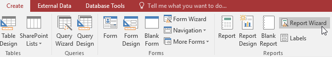
-
Va apărea Expertul de raportare. În procedurile de mai jos, vom discuta despre diferitele pagini din Expertul de raportare.
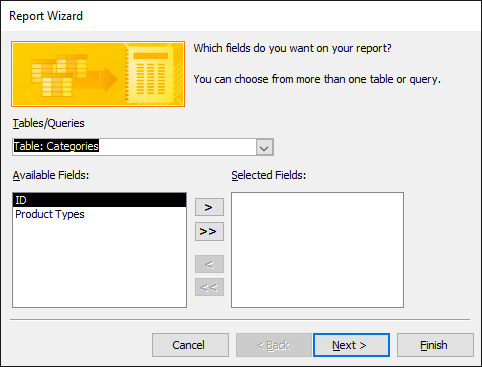
-
Faceți clic pe săgeata derulantă pentru a selecta tabelul sau interogarea care conține câmpurile dorite.
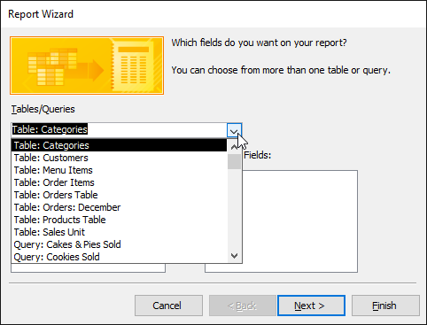
-
Selectați un câmp din lista din stânga și faceți clic pe săgeata dreapta pentru a-l adăuga la raport.
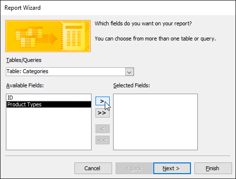
-
Puteți adăuga câmpuri din mai multe tabele sau interogări repetând pașii de mai sus. După ce ați adăugat câmpurile dorite, faceți clic pe Următorul.
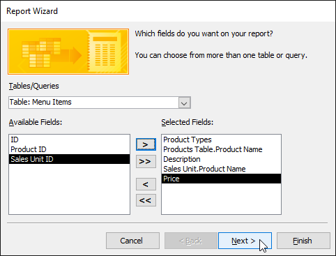
Expertul de raportare vă va oferi opțiuni care vă permit să alegeți cum să vizualizați și să organizați datele.
Aceste opțiuni grupează date similare în câmpurile dvs. și organizează aceste câmpuri pe mai multe niveluri, cum ar fi într-o listă cu marcatori.
-
Accesul va oferi o listă cu mai multe opțiuni de organizare. Selectați o opțiune din listă pentru a o previzualiza.
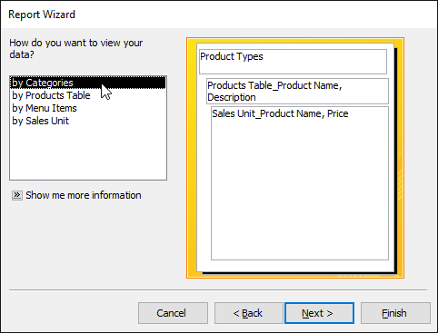
-
Faceți clic pe Următorul când sunteți mulțumit de organizarea de bază a datelor dvs.
-
Dacă nu sunteți mulțumit de modul în care sunt organizate datele dvs., acum puteți modifica nivelurile de grupare.
Selectați un câmp din listă, apoi faceți clic pe săgeata dreapta pentru a-l adăuga ca nivel nou.
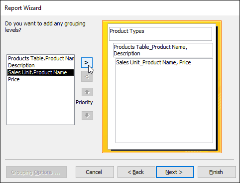
-
Dacă este necesar, modificați ordinea câmpurilor dvs.
grupate selectând un câmp și făcând clic pe săgeata de prioritate sus sau jos pentru a-l muta în sus sau în jos la un nivel.
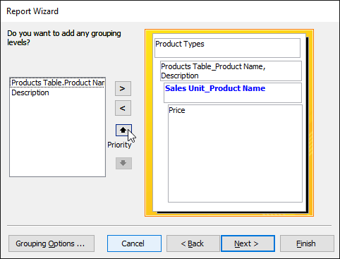
-
După ce sunteți mulțumit de organizarea raportului dvs., faceți clic pe Următorul.
-
Faceți clic pe săgeata derulantă de sus, apoi selectați numele primului câmp pe care doriți să îl sortați.
-
Faceți clic pe butonul din dreapta pentru a schimba sortarea în crescător sau descendent.
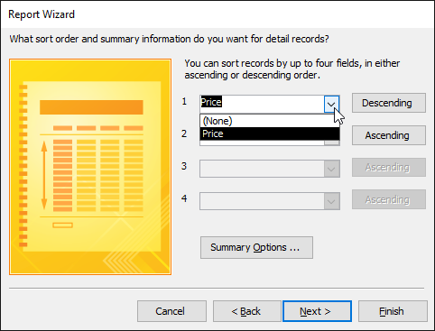
-
Adăugați orice fel suplimentar. Puteți sorta până la patru câmpuri.
Sortarea va fi aplicată de sus în jos, adică sortarea din partea de sus a listei va fi sortarea principală.
-
Când sunteți mulțumit de modul în care sunt sortate datele dvs., faceți clic pe Următorul.
-
Faceți clic pe diferitele opțiuni de aspect pentru a vedea cum arată, apoi selectați una pe care să o utilizați în raport.
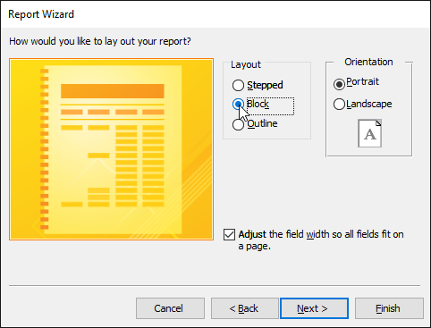
-
Selectați fie o orientare portret (înalt) sau peisaj (larg) pentru raportul dvs.
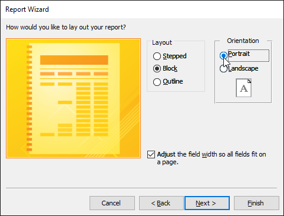
-
După ce sunteți mulțumit de aspectul raportului dvs., faceți clic pe Următorul.
-
Selectați caseta de text, apoi introduceți titlul dorit pentru raport.
-
Selectați dacă doriți să previzualizați raportul sau să modificați designul acestuia, apoi faceți clic pe Terminare.
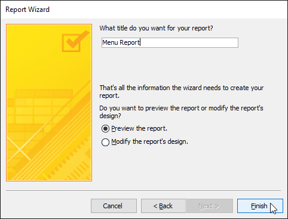
-
Raportul dvs. va fi creat și salvat.
Unul dintre punctele forte ale rapoartelor este că le puteți modifica aspectul pentru a le face să arate așa cum doriți.
Puteți adăuga anteturi și subsoluri, puteți aplica culori noi și chiar adăuga un logo.
Toate aceste lucruri vă pot ajuta să creați rapoarte atractive din punct de vedere vizual.
Cea mai mare parte a informațiilor din raportul dvs. provine direct din interogarea sau tabelul din care ați creat-o,
ceea ce înseamnă că nu le puteți edita în raport. Cu toate acestea, puteți modifica, adăuga sau șterge textul etichetei,
anteturile și subsolurile pentru a face raportul mai clar și mai ușor de citit.
De exemplu, în raportul nostru am decis că nu avem nevoie de titlurile câmpurilor pentru a înțelege datele noastre, așa că le-am șters pur și simplu.
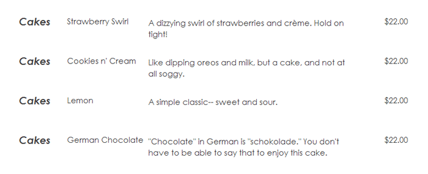
Pentru a vizualiza și modifica antetul și subsolul care apar pe fiecare pagină a raportului dvs.,
selectați comanda Vizualizare din Panglică și comutați la vizualizarea Proiectare.
Antetul și subsolul sunt situate în spațiul alb de sub barele Antet și Subsol pagină.
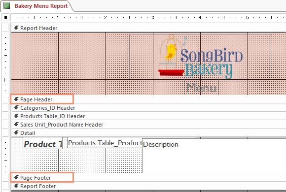
În funcție de designul raportului dvs., uneori puteți constata că nu există spațiu alb în antetul și subsolul paginii,
ca în imaginea de mai sus. Dacă acesta este cazul, trebuie să redimensionați antetul și subsolul înainte de a putea adăuga ceva la ele.
Pur și simplu faceți clic și trageți marginea de jos a antetului sau subsolului pentru a-l mări.
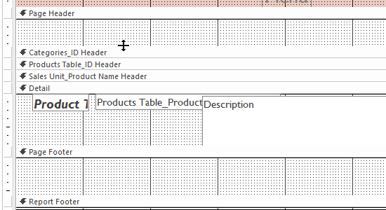
-
Selectați fila Design, localizați grupul Controale, apoi faceți clic pe comanda Etichetă.
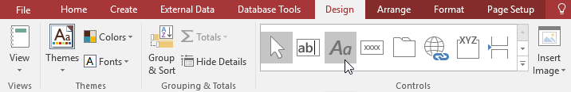
-
Faceți clic și trageți mouse-ul în interiorul zonei albe pentru a vă crea eticheta.
Eliberați mouse-ul când acesta are dimensiunea dorită.
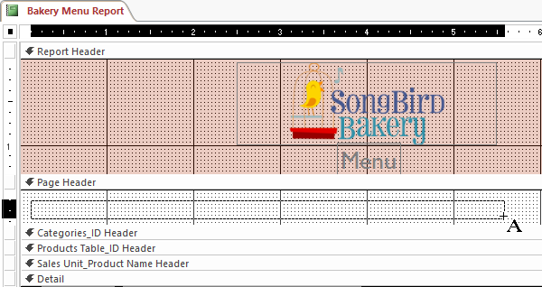
-
Faceți clic pe caseta de text, apoi introduceți textul dorit.
-
Selectați fila Design, localizați grupul Antet/Subsol, apoi faceți clic pe comanda Data și Ora.
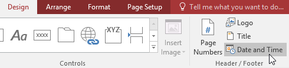
-
Va apărea o casetă de dialog. Selectați opțiunile de formatare dorite.
Va apărea o previzualizare a textului care va fi inclus în raportul dvs.
-
Când sunteți mulțumit de aspectul datei și orei, faceți clic pe OK.
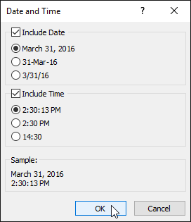
-
Selectați fila Design, apoi localizați grupul Antet/Subsol.
-
Faceți clic pe comanda Numere pagini.
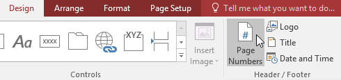
-
Va apărea caseta de dialog Numere de pagină. Sub Format, alegeți
Pagina N pentru a afișa numai numărul paginii curente sau Pagina N din M pentru a afișa numărul paginii curente și numărul total de pagini.
-
Sub Poziție, alegeți Începutul paginii sau Partea de jos a paginii pentru a controla unde apar numerele paginii.
-
Faceți clic pe săgeata derulantă pentru a selecta alinierea numerelor paginilor.
-
Când sunteți mulțumit de setări, faceți clic pe OK.
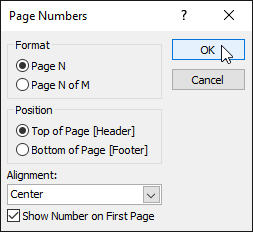
-
Din fila Design, faceți clic pe comanda View, apoi selectați Layout View din lista derulantă.
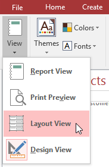
-
Localizați grupul Antet/Subsol, apoi faceți clic pe comanda Logo.
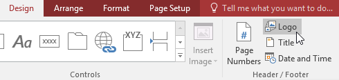
-
Va apărea o casetă de dialog. Găsiți și selectați fișierul dorit, apoi faceți clic pe OK pentru a-l adăuga în raport.
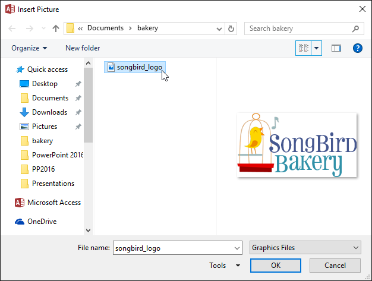
-
O versiune mică a imaginii va apărea în antet. Faceți clic și trageți chenarul imaginii pentru a o redimensiona.
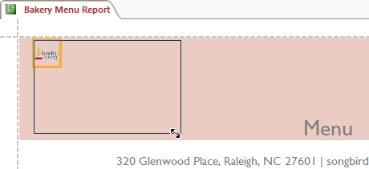
-
Dacă este necesar, mutați sigla în locația dorită făcând clic și trăgând-o.
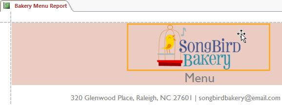
O temă este un set de culori și fonturi care se aplică întregii baze de date pentru a-i oferi un aspect consistent și profesional.
În mod implicit, bazele de date folosesc tema Office. Când schimbați tema, toate fonturile și culorile temei din baza de date se
schimbă pentru a se potrivi cu noua temă.
Proiectarea și modificarea rapoartelor folosind elemente de temă vă poate ajuta să păstrați aspectul consecvent al rapoartelor.
-
Selectați fila Design, localizați grupul Teme, apoi faceți clic pe comanda Teme.
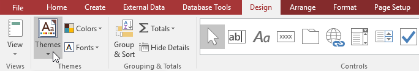
-
Va apărea un meniu derulant. Selectați tema dorită.
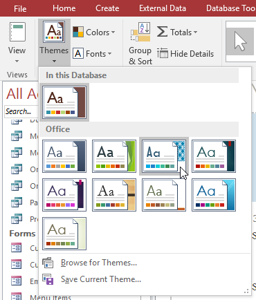
-
Tema va fi aplicată întregii baze de date.
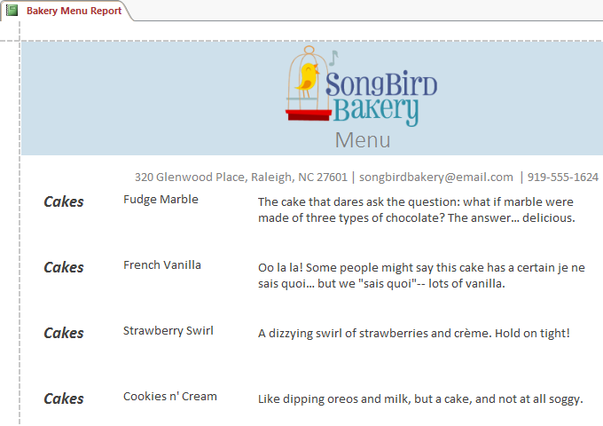
-
Selectați fila Design, localizați grupul Teme, apoi faceți clic pe comanda Fonturi.
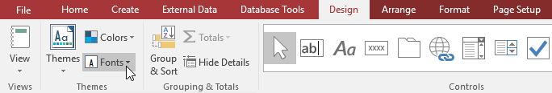
-
Va apărea un meniu derulant. Selectați un set de fonturi tematice.
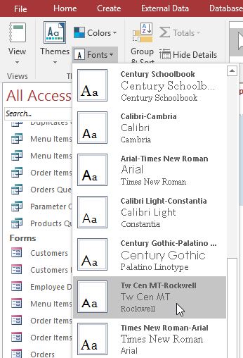
-
Fonturile vor fi aplicate întregii baze de date.
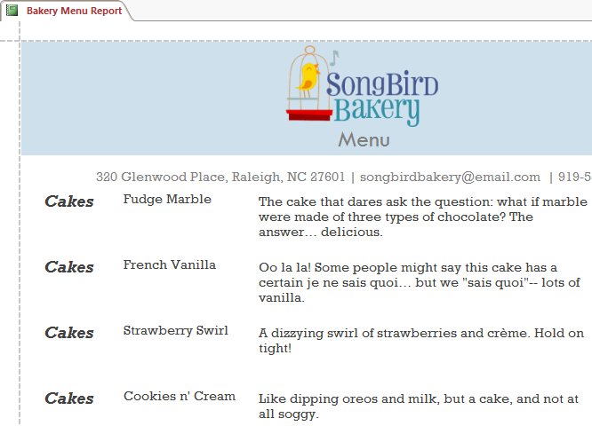